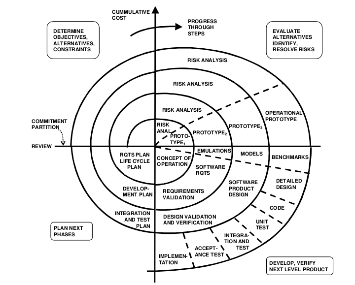

So you know what you're going to build and how you're going to build it. What process should you go about building it? Who's going to build what? What order should you build it in? How do you make sure everyone is in sync while you're building it? And most importantly, how to do you make sure you build well and on time? These are fundamental questions in software engineering with many potential answers. Unfortunately, we still don't know which of those answers are right.
At the foundation of all of these questions are basic matters of project management: plan, execute, and monitor. But developers in the 1970's and on found that traditional project management ideas didn't seem to work. The earliest process ideas followed a "waterfall" model, in which a project begins by identifying requirements, writing specifications, implementing, testing, and releasing, all under the assumption that every stage could be fully tested and verified. (Recognize this? It's the order of topics we're discussing in this class!). Many managers seemed to like the waterfall model because it seemed structured and predictable; however, because most managers were originally software developers, they preferred a structured approach to project management (Weinberg 1982). The reality, however, was that no matter how much verification one did of each of these steps, there always seemed to be more information in later steps that caused a team to reconsider it's earlier decision (e.g., imagine a customer liked a requirement when it was described in the abstract, but when it was actually built, they rejected it, because they finally saw what the requirement really meant).
In 1988, Barry Boehm proposed an alternative to waterfall called the Spiral model (Boehm 1988): rather than trying to verify every step before proceeding to the next level of detail, prototype every step along the way, getting partial validation, iteratively converging through a series of prototypes toward both an acceptable set of requirements and an acceptable product. Throughout, risk assessment is key, encouraging a team to reflect and revise process based on what they are learning. What was important about these ideas were not the particulars of Boehm's proposed process, but the disruptive idea that iteration and process improvement are critical to engineering great software.
Around the same time, two influential books were published. Fred Brooks wrote The Mythical Man Month (Brooks 1995), a book about software project management, full of provocative ideas that would be tested over the next three decades, including the idea that adding more people to a project would not necessarily increase productivity. Tom DeMarco and Timothy Lister wrote another famous book, Peopleware: Productive Projects and Teams (DeMarco 1987), arguing that the major challenges in software engineering are human, not technical. Both of these works still represent some of the most widely-read statements of the problem of managing software development.
These early ideas in software project management led to a wide variety of other discoveries about process. For example, organizations of all sizes can improve their process if they are very aware of what the people in the organization know, what it's capable of learning, and if it builds robust processes to actually continually improve process (Dybȧ 2002, Dybȧ 2003). This might mean monitoring the pace of work, incentivizing engineers to reflect on inefficiencies in process, and teaching engineers how to be comfortable with process change.
Beyond process improvement, other factors emerged. For example, researchers discovered that critical to team productivity was awareness of teammates' work (Ko et al. 2007). Teams need tools like dashboards to help make them aware of changing priorities and tools like feeds to coordinate short term work (Treude & Storey 2010). Moreover, researchers found that engineers tended to favor non-social sources such as documentation for factual information, but social sources for information to support problem solving (Milewski 2007). Decades ago, developers used tools like email and IRC for awareness; now they use tools like Slack, Trello, GitHub, and JIRA, which have the same basic functionality, but are much more polished, streamlined, and customizable.
In addition to awareness, ownership is a critical idea in process. This is the idea that for every line of code, someone is responsible for it's quality. The owner might be the person who originally wrote the code, but it could also shift to new team members. Studies of code ownership on Windows Vista and Windows 7 found that less a component had a clear owner, the more pre-release defects it had and the more post-release failures were reported by users (Bird et al. 2011). This means that in addition to getting code written, having clear ownership and clear processes for transfer of ownership are key to functional correctness.
Pace is another factor that affects quality. Clearly, there's a tradeoff between how fast a team works and the quality of the product it can build. In fact, interview studies of engineers at Google, Facebook, Microsoft, Intel, and other large companies found that the pressure to reduce "time to market" harmed nearly every aspect of teamwork: the availability and discoverability of information, clear communication, planning, integration with others' work, and code ownership (Rubin & Rinard 2016). Not only did a fast pace reduce quality, but it also reduced engineers' personal satisfaction with their job and their work. I encountered similar issues as CTO of my startup: while racing to market, I was often asked to meet impossible deadlines with zero defects and had to constantly communicate to the other executives in the company why this was not possible (Ko 2017).
Because of the importance of awareness and communication, the distance between teammates is also a critical factor. This is most visible in companies that hire remote developers, building distributed teams. The primary motivation for doing this is to reduce costs or gain access to engineering talent that is distant from a team's geographical center, but over time, companies have found that doing so necessitates significant investments in travel and socialization to ensure quality, minimizing geographical, temporal and cultural separation (Smite 2010). Researchers have found that there appear to be fundamental tradeoffs between productivity, quality, and/or profits in these settings (Ramasubbu et al. 2011). For example, more distance appears to lead to slower communication (Wagstrom & Datta 2014). Despite these tradeoffs, most rigorous studies of the cost of distributed development have found that when companies work hard to minimize temporal and cultural separation, the actual impact on defects was small (Kocaguneli et al. 2013). Some researchers have begun to explore even more extreme models of distributed development, hiring contract developers to complete microtasks over a few days without hiring them as employees; early studies suggest that these models have the worst of outcomes, with greater costs, poor scalability, and more significant quality issues (Stol & Fitzgerald 2014).
A critical part of ensuring all that a team is successful is having someone responsible for managing these factors of distance, pace, ownership, awareness, and overall process. The most obvious person to oversee this is, of course, a project manager. Research on what skills software engineering project managers need suggests that while some technical knowledge is necessary, it the soft skills necessary for managing all of these factors in communication and coordination that distinguish great managers (Kalliamvakou et al. 2017).
While all of this research has strong implications for practice, industry has largely explored its own ideas about process, devising frameworks that addressed issues of distance, pace, ownership, awareness, and process improvement. Extreme Programming (Beck 1999) was one of these frameworks and it was full of ideas:
Note that none of these had any empirical evidence to back them. Moreover, Beck described in his original proposal that these ideas were best for "outsourced or in-house development of small- to medium-sized systems where requirements are vague and likely to change", but as industry often does, it began hyping it as a universal solution to software project management woes and adopted all kinds of combinations of these ideas, adapting them to their existing processes. In reality, the value of XP appears to depend on highly project-specific factors (Müller & Padberk 2013), while the core ideas that industry has adopted are valuing feedback, communication, simplicity, and respect for individuals and the team (Sharp & Robinson 2004). Researchers continue to investigate the merits of the list above; for example, numerous studies have investigated the effects of pair programming on defects, finding small but measurable benefits (di Bella et al. 2012)
At the same time, Beck began also espousing the idea of "Agile" methods, which celebrated many of the values underlying Extreme Programming, such as focusing on individuals, keeping things simple, collaborating with customers, and being iterative. This idea of begin agile was even more popular and spread widely in industry and research, even though many of the same ideas appeared much earlier in Boehm's work on the Spiral model. Researchers found that Agile methods can increase developer enthusiasm (Syed-Abdulla et al. 2006), that agile teams need different roles such as Mentor, Co-ordinator, Translator, Champion, Promoter, and Terminator (Hoda et al. 2010), and that teams are combing agile methods with all kinds of process ideas from other project management frameworks such as Scrum (meet daily to plan work, plan two-week sprints, maintain a backlog of work) and Kanban (visualize the workflow, limit work-in-progress, manage flow, make policies explicit, and implement feedback loops) (Al-Baik & Miller 2015). I don't define any of these ideas here because there aren't standard definitions to share.
Ultimately, all of this energy around process ideas in industry is exciting, but disorganized. None of these efforts really get to the core of what makes software projects difficult to manage. One effort in research to get to this core by contributing new theories that explain these difficulties. The first is Herbsleb's Socio-Technical Theory of Coordination (STTC). The idea of the theory is quite simple: technical dependencies in engineering decisions (e.g., this function calls this other function, this data type stores this other data type) define the social constraints that the organization must solve in a variety of ways to build and maintain software (Herbsleb & Mockus 2003, Herbsleb 2016). The better the organization builds processes and awareness tools to ensure that the people who own those engineering dependencies are communicating and aware of each others' work, the fewer defects that will occur. Herbsleb referred this alignment as sociotechnical congruence, and conducted a number of studies demonstrating its predictive and explanatory power.
In my recent work (Ko 2017), I extend this idea to congruence with beliefs about product value, claiming that successful software products require the constant, collective communication and agreement of a coherent proposition of a product's value across UX, design, engineering, product, marketing, sales, support, and even customers. A team needs to achieve Herbsleb's sociotechnical congruence to have a successful product, but that alone is not enough: the rest of the organization has to have a consistent understanding of what is being built and why, even as that understanding evolves over time.
Al-Baik, O., & Miller, J. (2015). The kanban approach, between agility and leanness: a systematic review. Empirical Software Engineering, 20(6), 1861-1897.
Beck, K. (1999). Embracing change with extreme programming. Computer, 32(10), 70-77.
Christian Bird, Nachiappan Nagappan, Brendan Murphy, Harald Gall, and Premkumar Devanbu. 2011. Don't touch my code! Examining the effects of ownership on software quality. In Proceedings of the 19th ACM SIGSOFT symposium and the 13th European conference on Foundations of software engineering (ESEC/FSE '11). ACM, New York, NY, USA, 4-14.
Boehm, B. W. (1988). A spiral model of software development and enhancement. Computer, 21(5), 61-72.
Brooks, F.P. (1995). The Mythical Man Month.
di Bella, E., Fronza, I., Phaphoom, N., Sillitti, A., Succi, G., & Vlasenko, J. (2013). Pair Programming and Software Defects--A Large, Industrial Case Study. IEEE Transactions on Software Engineering, 39(7), 930-953.
DeMarco, T. and Lister, T. (1987). Peopleware: Productive Projects and Teams.
Tore Dybȧ. 2003. Factors of software process improvement success in small and large organizations: an empirical study in the scandinavian context. In Proceedings of the 9th European software engineering conference held jointly with 11th ACM SIGSOFT international symposium on Foundations of software engineering (ESEC/FSE-11). ACM, New York, NY, USA, 148-157.
Dybȧ, T. (2002). Enabling software process improvement: an investigation of the importance of organizational issues. Empirical Software Engineering, 7(4), 387-390.
James D. Herbsleb and Audris Mockus. 2003. Formulation and preliminary test of an empirical theory of coordination in software engineering. In Proceedings of the 9th European software engineering conference held jointly with 11th ACM SIGSOFT international symposium on Foundations of software engineering (ESEC/FSE-11). ACM, New York, NY, USA, 138-137.
James Herbsleb. 2016. Building a socio-technical theory of coordination: why and how. In Proceedings of the 2016 24th ACM SIGSOFT International Symposium on Foundations of Software Engineering (FSE 2016). ACM, New York, NY, USA, 2-10.
Rashina Hoda, James Noble, and Stuart Marshall. 2010. Organizing self-organizing teams. In Proceedings of the 32nd ACM/IEEE International Conference on Software Engineering - Volume 1 (ICSE '10), Vol. 1. ACM, New York, NY, USA, 285-294.
Kalliamvakou, E., Bird, C., Zimmermann, T., Begel, A., DeLine, R., & German, D. M. (2017). What makes a great manager of software engineers? IEEE Transactions on Software Engineering.
Andrew J. Ko, Robert DeLine, and Gina Venolia. 2007. Information Needs in Collocated Software Development Teams. In Proceedings of the 29th international conference on Software Engineering (ICSE '07). IEEE Computer Society, Washington, DC, USA, 344-353.
Andrew J. Ko (2017). A Three-Year Participant Observation of Software Startup Software Evolution. International Conference on Software Engineering (ICSE), Software Engineering in Practice, to appear.
Ekrem Kocaguneli, Thomas Zimmermann, Christian Bird, Nachiappan Nagappan, and Tim Menzies. 2013. Distributed development considered harmful? In Proceedings of the 2013 International Conference on Software Engineering (ICSE '13). IEEE Press, Piscataway, NJ, USA, 882-890.
Milewski, A. E. (2007). Global and task effects in information-seeking among software engineers. Empirical Software Engineering, 12(3), 311-326.
Matthias M. Müller and Frank Padberg. 2003. On the economic evaluation of XP projects. In Proceedings of the 9th European software engineering conference held jointly with 11th ACM SIGSOFT international symposium on Foundations of software engineering (ESEC/FSE-11). ACM, New York, NY, USA, 168-177.
Narayan Ramasubbu, Marcelo Cataldo, Rajesh Krishna Balan, and James D. Herbsleb. 2011. Configuring global software teams: a multi-company analysis of project productivity, quality, and profits. In Proceedings of the 33rd International Conference on Software Engineering (ICSE '11). ACM, New York, NY, USA, 261-270.
Julia Rubin and Martin Rinard. 2016. The challenges of staying together while moving fast: an exploratory study. In Proceedings of the 38th International Conference on Software Engineering (ICSE '16). ACM, New York, NY, USA, 982-993.
Smite, D., Wohlin, C., Gorschek, T., & Feldt, R. (2010). Empirical evidence in global software engineering: a systematic review. Empirical software engineering, 15(1), 91-118.
Klaas-Jan Stol and Brian Fitzgerald. 2014. Two's company, three's a crowd: a case study of crowdsourcing software development. In Proceedings of the 36th International Conference on Software Engineering (ICSE 2014). ACM, New York, NY, USA, 187-198.
Syed-Abdullah, S., Holcombe, M., & Gheorge, M. (2006). The impact of an agile methodology on the well being of development teams. Empirical Software Engineering, 11(1), 143-167.
Christoph Treude and Margaret-Anne Storey. 2010. Awareness 2.0: staying aware of projects, developers and tasks using dashboards and feeds. In Proceedings of the 32nd ACM/IEEE International Conference on Software Engineering - Volume 1 (ICSE '10), Vol. 1. ACM, New York, NY, USA, 365-374.
Patrick Wagstrom and Subhajit Datta. 2014. Does latitude hurt while longitude kills? Geographical and temporal separation in a large scale software development project. In Proceedings of the 36th International Conference on Software Engineering (ICSE 2014). ACM, New York, NY, USA, 199-210.
Gerald M. Weinberg. 1982. Over-structured management of software engineering. In Proceedings of the 6th international conference on Software engineering (ICSE '82). IEEE Computer Society Press, Los Alamitos, CA, USA, 2-8.
Software Engineering Daily (2016). Git Workflows with Tim Pettersen.
Software Engineering Daily (2017). Engineering Management with Mike Borozdin.
Software Engineering Daily (2017). Tech Leadership with Jeff Norris.